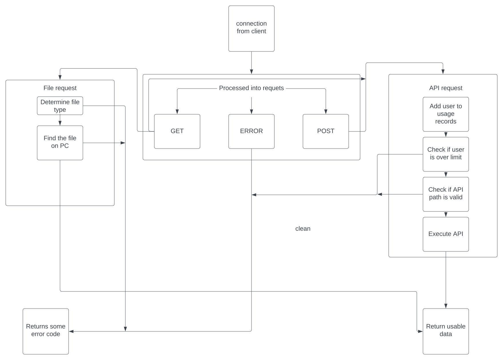

Everything starts with an incoming connection. Nginx is the first to interact with this. I am not too sure how Nginx works, but all I use it for is a reverse proxy to enable HTTPS.
Now, my web server can finally take the request and work its magic. Before we go into how this works, let's analyze all the code that is run on startup.
let mut secrets = CREDS.lines();
let username = secrets.next().unwrap();
let password = secrets.next().unwrap();
drop(secrets);
let creds = Credentials::new(username.to_string(), password.to_string());
let mailer = SmtpTransport::relay("smtp.gmail.com")
.unwrap()
.credentials(creds)
.build();
let mailer = Arc::new(mailer);The code reads a text file into memory containing my email and its password. It then initializes a transporter using the Lettre library.
After this, the TCP listener, threadpool, and APIs are created.
let port = env::var("PORT").expect("Need PORT env var");
let addr = String::from("0.0.0.0:") + &port;
let listener = TcpListener::bind(addr).unwrap();
let pool = ThreadPool::new(8);
let mut apis = ApiRegister::new();
apis.register_api("/api/test", Box::new(test_api), 6, 360);
apis.register_api("/api/mail", Box::new(email_api), 6, 360);
apis.register_api("/api/recentBlogPosts", Box::new(get_recent_blog_posts), 60, 360);
apis.register_api("/api/searchBlog", Box::new(search_blog_posts), 20, 360);
let apis = Arc::new(apis);I'm going to skip over the thread pool and TCP listener creation as they are taken from the Rust book. The ApiRegister is two hashmaps combined, one containing the actual APIS and one containing usage data. I'll go over how this works later on. Once initialization is done, we can begin to start handling connections. The first step is to turn the raw bytes of the TcpStream into a usable and valid HTTP request. To start, we read the first line of the request. We can then tell what type of request we have either GET or POST. There is little difference between how POST or GET requests are handled other than POST requests look for more header information in this quite ugly loop.
for line in header.lines() {
if line.starts_with("Content-Type: ") {
content_type = ContentType::from_str(&line[14..])?;
} else if line.starts_with("Host: ") {
host.push_str(&line[6..]);
} else if line.starts_with("Content-Length: ") {
content_length = match line[16..].parse() {
Err(_) => return Err(HTTPError::InvalidContentLength),
Ok(num) => num,
};
} else if line.starts_with("X-Forwarded-For: ") {
ip_str = &line[17..];
}
}After this, the POST request will read the data contained in the body.
Now, we check specifically what the client is requesting. To my knowledge, POST requests can only be APIs, so processing them is quite boring. GET requests first try to discern what exactly the user is asking for using this match statement.
let request_type = match path.parent().and_then(Path::to_str) {
Some("/") => {
if path == Path::new("/favicon.ico") {
RequestType::OtherFile
} else {
RequestType::Html
}
},
Some("/blog") => RequestType::Html, // setting up for the blog folder
Some("/api") => RequestType::Api,
None => RequestType::Html, // this is the index.html
Some(_) => RequestType::OtherFile,
};The reason for this structure is due to the way the files are stored and my desire for the pages to not have the .html at the end. The directory structure is:
- Files
- Blog (contains blog metadata and blog .html files)
- CSS
- Images
- JS
- All the main HTML files
All the file fetching is quite simple. Go to that path, attempt to read the data there, and send it back if it exists, if not send a 404 response.
Now, we can finally talk about the part I am most proud of the API system. The implementation of the registry and actual API looks like this:
pub struct ApiRegister {
apis: HashMap<String, Api>,
users: RwLock<HashMap<IpAddr, User>>,
}
pub struct Api {
inner: InnerApi,
limit_count: usize,
seconds_till_refresh: u32,
}
type InnerApi = Box<dyn Fn(Request) -> Response + Send + Sync + 'static>;Executing an API is simple, someone makes a request that looks like turtlebamboo.com/api/test.
Before we even check if this is a real path, we make sure that the IP is contained within the users hashmap. Then once the user is confirmed to exist or added to the list, we check that they have not passed over their limit. If so, we do not process the request and send a 429 response. Each API has its own unique limit and each limit is decided when it is registered.
apis.register_api("/api/test", Box::new(test_api), 6, 360);
'6' designates a limit of 6 requests and '360' is how many seconds the requests are stored for.
The way APIs are processed is quite simple.
let api = apis.get_api(path);
let response = match api {
None => {
apis.add_gloabal_request(request.get_ip());
Response::empty_404()
},
Some(api) => {
apis.add_request(request.get_path(), request.get_ip());
api.run(request)
},
};Since the registry is a hashmap we use the built-in .get() method to see if it exists. If not, a standard 404 is sent back. If the path is a valid API path, the API is run and the data is sent back. An example of an API is the one used to search the blog post.
fn search_blog_posts(request: Request) -> Response {
let request = match request {
Request::GetRequest(r) => r,
Request::POSTRequest(_) => return Response::new_405_error("GET"),
};
let blog_title = match request.get_query("title") {
Some(t) => clean_url_spaces(t),
None => return Response::new_400_error(HTTPError::InvalidPath),
};
//read in cbmd
let dir = fs::read_dir("website/files/blog").unwrap();
let blog_data = dir.filter_map(|f| f.ok())
.filter(|f| f.path().extension() == Some(OsStr::new("cbmd")))
.filter_map(|f| Cbmd::from_meta_file(&f.path()).ok())
.filter(|f| f.get_title().contains(&blog_title))
.collect::<Vec<Cbmd>>();
// send_blog_vec(data, skip, max)
send_blog_vec(blog_data, 0, 8)
}Other minor details to note are that the server is multi-threaded, and the API registry contains for internal mutability.
multithreaded coding so my understanding is shaky and may be incorrect. A copy of the API register exists on each thread where a
request is being processed. If the whole thing was wrapped in a Mutex only one API could be processed at the same time. Since only
the user data needed to be mutated, I only put the user data inside a RwLock. This does lead to mutability within an
&self
reference. So far, nothing bad has happened as a result of this and hopefully, this allows for multiple requests to be
processed at once.
Once again everything from the front end to the back end is open source on my GitHub
Here is a cool flow chart outlining the webservers flow.
